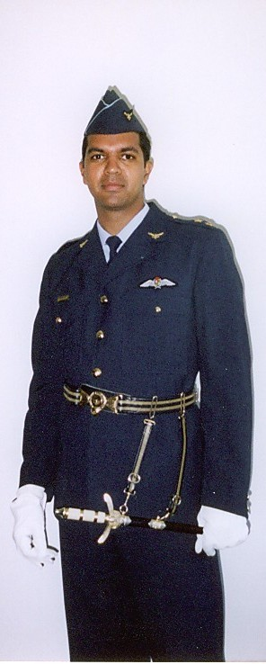

Hi there👋, I'm Jason. Welcome to my Portfolio!!! I'm excited to share my work journey with you!😊

Personal Details
Get to know me
Let me introduce myself in a straightforward way, based on what I've done over the last 30 years.
I started in aviation as an Air Force Instructor Pilot and qualified as an Airline Transport pilot with an Instructor Endorsement, working in both military and civilian environments, including international operations. Over time, I moved into government work where I was responsible for checking how aviation systems and organizations operate in real life. That included looking at safety, training, licensing, and whether companies actually follow the rules. I also spent a lot of time doing inspections, audits, and investigating serious incidents when things went wrong. On top of that, I was involved in training, teaching, and helping develop standards for aviation qualifications.
I also worked in leadership roles where I had to manage teams, operations, and decision-making under pressure. This included working during major international audits and being part of accident investigation teams. I've also been involved in humanitarian operations in Africa, and I have a technical background in electronics and communications systems.
What this really adds up to is a way of working that is very practical and hands-on. I'm used to situations where things can go wrong quickly, where decisions matter, and where you have to stay calm and fix problems properly rather than just talk about them.
In more recent years, I've applied this same approach in managing a residential estate environment. That role involves dealing with security issues, maintenance problems, staff coordination, contractors, and resident concerns. It's a very active environment where things can change at any moment, and you're constantly switching between planning and handling urgent situations. It requires being available most of the time, following up on issues, checking operations on the ground, and making sure everything keeps running smoothly.
From all of this, I've learned how to stay organized even when things are busy and unpredictable, how to deal with different types of people, and how to make decisions that are practical and fair. I'm comfortable working alone or with teams, and I focus on getting things done properly and consistently. At the end of the day, I would describe myself as someone who brings structure to messy situations, stays calm when things get pressured, and keeps operations moving in the right direction.
I am eager to meet the tasks and challenges that would come from working with the high calibre team at your company and I strongly believe that I would be a solid choice as an employee.
I look forward to hearing from you and I would avail myself at your convenience for a formal interview so that we can discuss my technical experience and knowledge in greater detail.